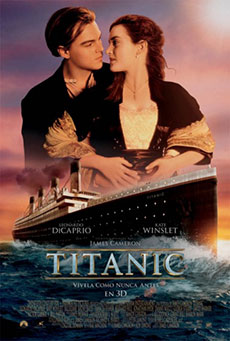

Titanic

Precio:9,90€
Director:James Cameron
Reparto:Leonardo DiCaprio, Kate Winslet, Billy Zane, Kathy Bates, Frances Fisher, Gloria Stuart, Bill Paxton, Bernard Hill, David Warner, Victor Garber, Jonathan Hyde, Suzy Amis, Danny Nucci, Jason Barry, Ewan Stewart, Ioan Gruffudd
Sinopsis:
Jack (DiCaprio), un joven artista, gana en una partida de cartas un pasaje para viajar a América en el Titanic, el transatlántico más grande y seguro jamás construido. A bordo conoce a Rose (Kate Winslet), una joven de una buena familia venida a menos que va a contraer un matrimonio de conveniencia con Cal (Billy Zane), un millonario engreído a quien sólo interesa el prestigioso apellido de su prometida. Jack y Rose se enamoran, pero el prometido y la madre de ella ponen todo tipo de trabas a su relación. Mientras, el gigantesco y lujoso transatlántico se aproxima hacia un inmenso iceberg.Año:1997
Duracion:195 min.
País:Estados Unidos
Premios:
1997: 11 Oscars, incluyendo mejor película, director, fotografía, sonido. 14 nom.
1997: 4 Globos de Oro: Mejor película drama, director, BSO, canción. 8 nom.
1997: 10 nominaciones a los BAFTA, incluyendo mejor película y director
1997: Círculo de Críticos de Nueva York: Nominada a Mejor película
1997: Premios Cesar: Nominada a mejor película extranjera
1997: National Board of Review: Mejor director
1998: Premios del Cine Europeo: Premio del Púbico mejor actriz (Kate Winslet)
Películas similares

Lo imposible
Bajo la misma estrella

12 años de esclavitud
OH!-PIÑONES
"La película de los noventa (al menos en cuanto a sus cifras y récords de nº de Oscars, presupuesto y recaudación en taquilla) rebasó las ya de por sí altísimas expectativas. Fuimos a ver efectos especiales y nos encontramos con una magnífica (y muy bien contada) historia de amor que conmovía y convencía.... cuando en esto llegó el iceberg. Entonces sufrimos con la tragedia de la romántica pareja (aunque evidentemente sobraba Billy Zane pegando tiros) mientras un espectáculo épico nos dejaba boquiabiertos y nos humedecía las pupilas. El resto es historia: el público hizo de Leonardo Di Caprio una estrella y de "Titanic" una máquina de recaudar dinero, además de una obra maestra del cine popular."
Jordi CostaPuntuación:4 piñones
"Nos encontramos, sin duda, ante un espectáculo visual sin precedentes. Impresionante y romántica historia sobre la tragedia del mítico trasatlántico"
Fernando MoralesPuntuación:3 piñones